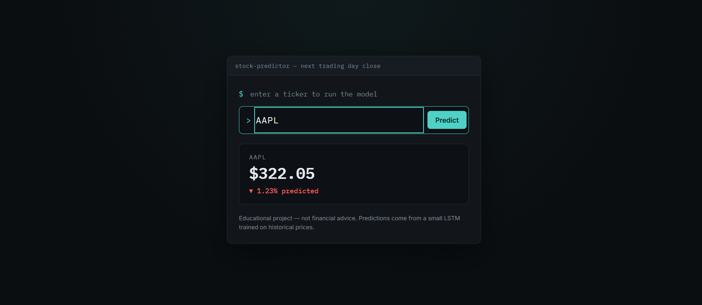

A recurrent neural network built from raw PyTorch — no nn.LSTM shortcut — trained to predict next-day stock closes, then shipped behind a simple web app.
I wanted to actually understand how an LSTM works internally rather than just importing one, so I wrote the recurrent cell from scratch in PyTorch instead of using the built-in nn.LSTM layer. The model takes historical OHLCV (open-high-low-close-volume) data for a set of large-cap stocks and learns to predict each stock's next-day closing price. Once it worked, I wrapped it in a small Flask web app so it's actually usable: type a ticker, hit enter, get a prediction — instead of editing a Python list and re-running a script.
Disclaimer
Built purely as a learning exercise in time-series modelling and PyTorch. It is not financial advice and was never intended to inform real investment decisions.
The pipeline behind the model has four stages, kept in the repo end-to-end so the process is visible rather than hidden behind a finished script: a dataset builder that pulls historical OHLCV data and engineers it into training features; a notebook that defines the hand-built LSTM architecture and trains and evaluates it; a backtester that compares the model's predictions against a simple buy-and-hold baseline; and a live predictor that pulls the most recent data after market close and prints next-day return predictions.
The app is a small Flask backend that serves a single page and handles prediction requests, paired with a lightweight HTML/CSS/JS frontend. The underlying predictor was adapted from the original repo so it exposes a single function that returns one ticker's prediction, rather than only printing a hardcoded batch of results to the console.

I'm upfront about this project's current limitations, because I think that honesty matters more than pretending it's finished. The backtest may be a little optimistic — it holds out one stock entirely rather than holding out a time period, so the model could be leaning on patterns shared across all the training stocks during that same window rather than showing genuine out-of-sample skill. The code itself is also spread across several scripts instead of organized into clean modules, and the dataset format shifts slightly at each stage since I built the pipeline one step at a time. On the product side, the web app currently only runs locally — deploying it properly is next. Longer term, I'd like to split training and testing by time instead of by ticker for a fairer accuracy measure, add technical-indicator features like MACD, and bring in a sentiment signal from news data, since price and volume alone can't see short-term sentiment-driven moves coming.